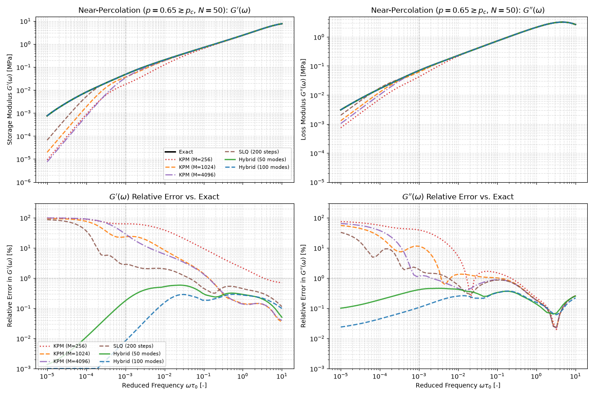
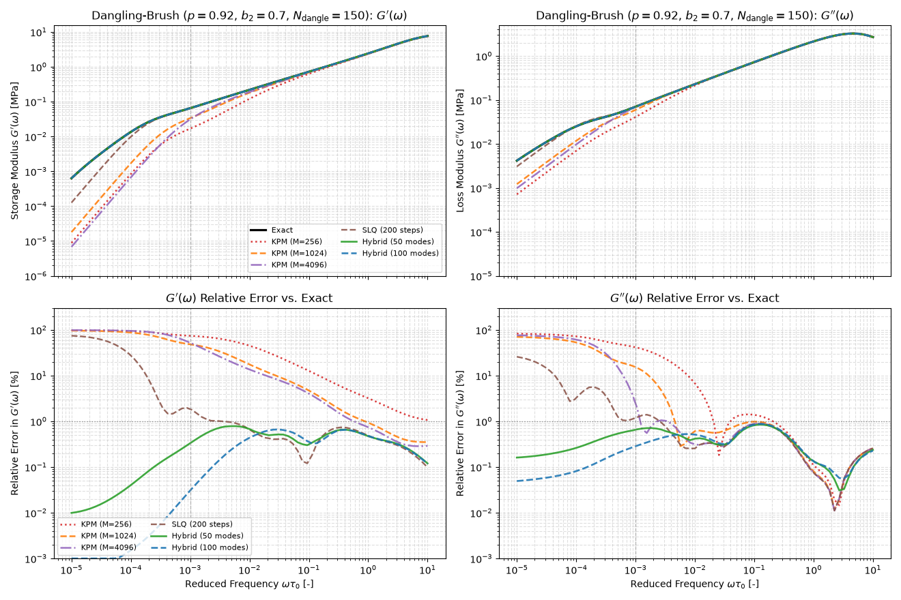
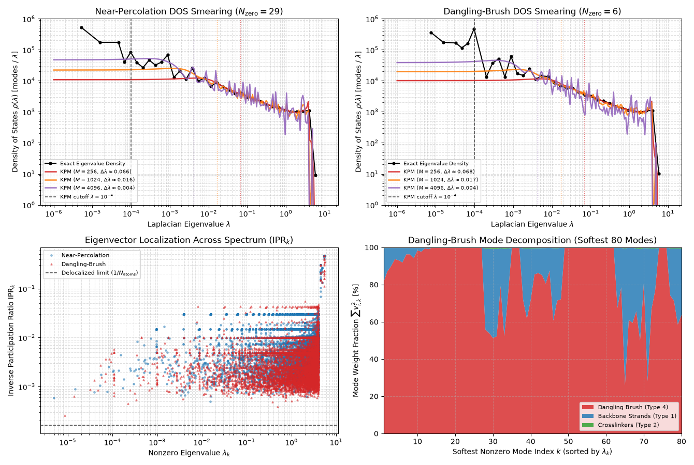
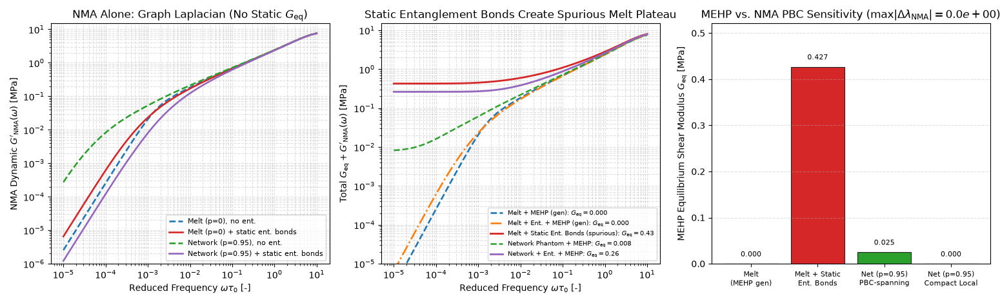

Note
Go to the end to download the full example code.
When KPM Fails in Normal Mode Analysis: Percolation, Dangling Modes & HybridConfig¶
While the Kernel Polynomial Method (KPMConfig) reproduces
viscoelastic moduli accurately across the transition and Rouse regimes of well-crosslinked
polymer networks (KPM vs. Full Eigenvalue Normal Mode Analysis for PDMS Networks), its Chebyshev expansion has fundamental
resolution limits near \(\lambda \to 0\) (Gusev and Bernhard [GB24]). Specifically:
Jackson-kernel smearing of zero modes: KPM does not deflate the zero-eigenvalue nullspace (
num_soluble_clusters), so the \(\lambda = 0\) Dirac spike is broadened over \(\Delta\lambda \sim \pi \lambda_{\max} / M\), leaking spurious spectral weight into \(\lambda > 10^{-4}\) while truncating genuine ultra-soft modes below the quadrature floor.Low-frequency breakdown in defect-rich topologies: Near the gelation threshold (\(p \gtrsim p_c\)) and in networks carrying long monofunctional dangling brushes (\(N_{\text{dangle}} \gg N_{\text{bb}}\)), dense clusters of ultra-soft, spatially localized modes appear at \(\lambda \in [10^{-6}, 10^{-3}]\), causing KPM (and even pure SLQ) to break down for \(\omega\tau_0 \lesssim 10^{-3}\) while
HybridConfigrecovers near-exact accuracy by deflating the softest exact eigenmodes.Physics boundary between NMA and MEHP:
NormalModeAnalyzersolves the coordinate-free Rouse graph Laplacian (treating every bond identically as permanent and lacking reptation, constraint release, or PBC pre-strain), whereasMEHPSimulator(Gusev [Gus19], Bernhard and Gusev [BG25]) resolves 3D equilibrium force balance across periodic boundaries to obtain the static plateau modulus \(G_{\text{eq}}\).
from pathlib import Path
import sys
from typing import Any, Tuple
import matplotlib.pyplot as plt
import numpy as np
if "__file__" in globals():
_examples_dir = str(Path(__file__).resolve().parents[1])
_nma_dir = str(Path(__file__).resolve().parent)
for _p in (_examples_dir, _nma_dir):
if _p not in sys.path:
sys.path.insert(0, _p)
from _example_cache import ( # noqa: E402
format_benchmark_footnote,
get_example_cache_path,
load_or_compute_cache,
)
from _kpm_limitations_runner import run_kpm_limitations_study # noqa: E402
_METHOD_STYLES: dict[str, Tuple[str, str, str, float]] = {
"exact": ("Exact", "#000000", "-", 2.3),
"kpm_256": ("KPM (M=256)", "#d62728", ":", 1.8),
"kpm_1024": ("KPM (M=1024)", "#ff7f0e", "--", 1.8),
"kpm_4096": ("KPM (M=4096)", "#9467bd", "-.", 1.8),
"slq": ("SLQ (200 steps)", "#8c564b", "--", 1.7),
"hybrid_50": ("Hybrid (50 modes)", "#2ca02c", "-", 1.9),
"hybrid_100": ("Hybrid (100 modes)", "#1f77b4", "--", 1.9),
}
def _plot_regime_moduli_and_error(
data: Any,
prefix: str,
regime_title: str,
) -> None:
"""Plot 2x2 grid of G'(omega), G''(omega), and relative errors for one regime."""
freqs = data["freqs"]
method_names = [str(m) for m in data["method_names"]]
gp_mean = data[f"{prefix}_gp_mean"]
gpp_mean = data[f"{prefix}_gpp_mean"]
err_gp_mean = data[f"{prefix}_err_gp_mean"]
err_gpp_mean = data[f"{prefix}_err_gpp_mean"]
fig, axes = plt.subplots(2, 2, figsize=(13.2, 8.8), sharex=True)
ax_gp, ax_gpp = axes[0, 0], axes[0, 1]
ax_err_gp, ax_err_gpp = axes[1, 0], axes[1, 1]
for idx, m_key in enumerate(method_names):
label, color, ls, lw = _METHOD_STYLES[m_key]
alpha = 1.0 if m_key == "exact" else 0.9
ax_gp.loglog(
freqs,
gp_mean[idx],
linestyle=ls,
color=color,
linewidth=lw,
alpha=alpha,
label=label,
)
ax_gpp.loglog(
freqs,
gpp_mean[idx],
linestyle=ls,
color=color,
linewidth=lw,
alpha=alpha,
label=label,
)
if m_key != "exact":
ax_err_gp.loglog(
freqs,
np.maximum(err_gp_mean[idx], 1e-3),
linestyle=ls,
color=color,
linewidth=lw,
alpha=alpha,
label=label,
)
ax_err_gpp.loglog(
freqs,
np.maximum(err_gpp_mean[idx], 1e-3),
linestyle=ls,
color=color,
linewidth=lw,
alpha=alpha,
label=label,
)
ax_gp.set_ylabel(r"Storage Modulus $G'(\omega)$ [MPa]")
ax_gp.set_title(rf"{regime_title}: $G'(\omega)$")
ax_gp.set_ylim(bottom=1e-6)
ax_gp.legend(frameon=True, fontsize=7.8, loc="lower right", ncol=2)
ax_gpp.set_ylabel(r"Loss Modulus $G''(\omega)$ [MPa]")
ax_gpp.set_title(rf"{regime_title}: $G''(\omega)$")
ax_gpp.set_ylim(bottom=1e-5)
ax_err_gp.set_xlabel(r"Reduced Frequency $\omega\tau_0$ [-]")
ax_err_gp.set_ylabel(r"Relative Error in $G'(\omega)$ [%]")
ax_err_gp.set_title(r"$G'(\omega)$ Relative Error vs. Exact")
ax_err_gp.set_ylim(1e-3, 300.0)
ax_err_gp.axhline(1.0, color="#666666", linestyle=":", linewidth=1.0, alpha=0.7)
ax_err_gp.legend(frameon=True, fontsize=7.8, loc="lower left", ncol=2)
ax_err_gpp.set_xlabel(r"Reduced Frequency $\omega\tau_0$ [-]")
ax_err_gpp.set_ylabel(r"Relative Error in $G''(\omega)$ [%]")
ax_err_gpp.set_title(r"$G''(\omega)$ Relative Error vs. Exact")
ax_err_gpp.set_ylim(1e-3, 300.0)
ax_err_gpp.axhline(1.0, color="#666666", linestyle=":", linewidth=1.0, alpha=0.7)
for ax in (ax_gp, ax_gpp, ax_err_gp, ax_err_gpp):
ax.axvline(1e-3, color="#888888", linestyle="--", linewidth=0.9, alpha=0.6)
ax.grid(True, which="both", linestyle="--", alpha=0.4)
plt.tight_layout()
plt.show()
def _print_regime_summary(data: Any, prefix: str, label: str) -> None:
"""Print summary table of low-frequency errors and runtime for a regime."""
freqs = data["freqs"]
method_names = [str(m) for m in data["method_names"]]
err_gp = data[f"{prefix}_err_gp_mean"]
err_gpp = data[f"{prefix}_err_gpp_mean"]
t_mean = data[f"{prefix}_t_mean"]
low_mask = freqs <= 1e-3
idx_1e5 = 0
print(f"\n=== {label} ===")
print(
f"Mean N_atoms={np.mean(data[f'{prefix}_n_atoms']):.0f}, "
f"N_ent={np.mean(data[f'{prefix}_n_ent']):.1f}, "
f"zero_modes={np.mean(data[f'{prefix}_n_zero']):.1f}, "
f"w_active={np.mean(data[f'{prefix}_w_act']):.3f}, "
f"w_dangling={np.mean(data[f'{prefix}_w_dang']):.3f}, "
f"w_soluble={np.mean(data[f'{prefix}_w_sol']):.3f}"
)
print(
f"{'Method':<20} | {'Time [s]':>8} | {"Err G'(1e-5) [%]":>16} | "
f"{"Mean Err G'(<=1e-3) [%]":>23} | {"Err G''(1e-5) [%]":>17} | "
f"{"Max Err G'' [%]":>15}"
)
print("-" * 112)
for idx, m_key in enumerate(method_names):
name = _METHOD_STYLES[m_key][0]
print(
f"{name:<20} | {t_mean[idx]:8.3f} | {err_gp[idx, idx_1e5]:16.2f} | "
f"{np.mean(err_gp[idx, low_mask]):23.2f} | {err_gpp[idx, idx_1e5]:17.2f} | "
f"{np.max(err_gpp[idx]):15.2f}"
)
Load Precomputed Ensemble Study¶
Both challenging PDMS network topologies (\(L = 14\,\text{nm}\),
\(n = 8\) independent realizations per regime) are loaded from cache;
pass --recompute to regenerate.
cache_path = get_example_cache_path(
"kpm_limitations_and_hybrid_cache.npz", "normal_mode_analysis"
)
data = load_or_compute_cache(cache_path, run_kpm_limitations_study)
Loading cached example data from kpm_limitations_and_hybrid_cache.npz...
Regime 1: Near-Percolation Networks (\(p \gtrsim p_c\))¶
Just above the classical Flory–Stockmayer gelation threshold \(p_c = 1/\sqrt{r(f - 1)} \approx 0.577\) (Macosko and Miller [MM76a]; here \(p = 0.65\), \(f = 4\), \(r = 1.0\), \(N = 50\)), the network contains many finite soluble clusters (zero modes) alongside soft spanning structures with eigenvalues down to \(\lambda \sim 10^{-6}\text{--}10^{-4}\).
Across \(\omega\tau_0 \in [10^{-5}, 10^{-3}]\), KPM (even at \(M = 4096\))
underpredicts \(G'(\omega)\) by up to two orders of magnitude (\(\sim 99\%\)
relative error) and mispredicts \(G''(\omega)\) by \(\sim 65\text{--}85\%\).
Pure SLQ (\(200\) Lanczos steps) also struggles to resolve clustered modes near
zero (\(\sim 85\text{--}95\%\) error at \(\omega\tau_0 = 10^{-5}\)).
Deflating just \(50\text{--}100\) exact low modes via
HybridConfig restores \(< 1\%\) accuracy across all
six frequency decades.

=== Near-Percolation PDMS (L=14 nm, N=50, p=0.65, r=1.0, n=8) ===
Mean N_atoms=6110, N_ent=7.1, zero_modes=28.5, w_active=0.069, w_dangling=0.363, w_soluble=0.568
Method | Time [s] | Err G'(1e-5) [%] | Mean Err G'(<=1e-3) [%] | Err G''(1e-5) [%] | Max Err G'' [%]
----------------------------------------------------------------------------------------------------------------
Exact | 10.416 | 0.00 | 0.00 | 0.00 | 0.00
KPM (M=256) | 0.162 | 97.31 | 83.89 | 74.40 | 74.40
KPM (M=1024) | 0.066 | 94.32 | 66.09 | 55.29 | 55.29
KPM (M=4096) | 0.313 | 97.81 | 80.68 | 64.32 | 64.32
SLQ (200 steps) | 0.231 | 86.02 | 40.98 | 32.74 | 32.74
Hybrid (50 modes) | 0.671 | 0.00 | 0.03 | 0.10 | 0.46
Hybrid (100 modes) | 0.885 | 0.00 | 0.00 | 0.02 | 0.37
Regime 2: Dangling-Brush Networks (\(b_2 = 0.7\), \(N_{\text{dangle}} = 150\))¶
Mixing a well-crosslinked backbone (\(p = 0.92\), \(N_{\text{bb}} = 35\))
with long monofunctional dangling chains (add_monofunctional_strands(),
\(b_2 = 0.7\), \(N_{\text{dangle}} = 150\)) creates a pronounced shoulder of
ultra-soft dangling-arm relaxation modes at \(\omega\tau_0 \in [10^{-5}, 10^{-2}]\).
Again, KPM fails catastrophically in the terminal/dangling relaxation tail, while
HybridConfig tracks the exact spectrum seamlessly.

=== Dangling-Brush PDMS (L=14 nm, N_bb=35, N_dangle=150, b2=0.7, p=0.92, n=8) ===
Mean N_atoms=6121, N_ent=4.1, zero_modes=6.0, w_active=0.081, w_dangling=0.739, w_soluble=0.180
Method | Time [s] | Err G'(1e-5) [%] | Mean Err G'(<=1e-3) [%] | Err G''(1e-5) [%] | Max Err G'' [%]
----------------------------------------------------------------------------------------------------------------
Exact | 29.547 | 0.00 | 0.00 | 0.00 | 0.00
KPM (M=256) | 0.072 | 98.02 | 90.57 | 82.49 | 82.49
KPM (M=1024) | 0.062 | 95.98 | 80.92 | 70.19 | 70.19
KPM (M=4096) | 0.297 | 98.48 | 89.06 | 75.95 | 75.95
SLQ (200 steps) | 0.207 | 74.35 | 33.32 | 25.80 | 25.80
Hybrid (50 modes) | 0.369 | 0.01 | 0.08 | 0.16 | 0.85
Hybrid (100 modes) | 0.812 | 0.00 | 0.00 | 0.05 | 0.88
Density-of-States Smearing & Eigenvector Localization¶
Evaluating density_of_states() on a
log-spaced grid \(\lambda \in [10^{-6}, 10^1]\) directly reveals why KPM fails:
Jackson kernel damping broadens the discrete zero-mode peak (\(N_{\text{zero}} = \text{num\_soluble\_clusters}\) at \(\lambda = 0\)) and the dense near-zero band over \(\Delta\lambda \sim \pi \lambda_{\max} / M\). For \(M = 256\) (\(\Delta\lambda \approx 0.08\)), the smeared zero-mode plateau extends over nearly three decades in \(\lambda\), while KPM’s internal quadrature cutoff (\(\lambda_k > 10^{-4}\)) discards ultra-soft modes.
Eigenvector localization: Using
solve_exact(compute_eigenvectors=True), we compute the Inverse Participation Ratio \(\text{IPR}_k = \sum_i v_{i,k}^4 / \left(\sum_i v_{i,k}^2\right)^2\) (effective participating beads \(N_{\text{eff}} = 1/\text{IPR}_k\)). The softest nonzero modes are strongly localized—residing predominantly on dangling brushes (\(> 85\text{--}99\%\) weight on type-4 monofunctional beads) in the dangling-brush network and on soluble/soft clusters near percolation.
def _plot_dos_and_localization(data: Any) -> None:
"""Plot DOS smearing (top) and IPR / mode-weight localization (bottom)."""
lam_grid = data["lambda_grid"]
bin_centers = data["dos_bin_centers"]
moments = data["dos_kpm_moments"]
dos_colors = ("#d62728", "#ff7f0e", "#9467bd")
fig, axes = plt.subplots(2, 2, figsize=(13.4, 9.0))
ax_dos_np, ax_dos_db = axes[0, 0], axes[0, 1]
ax_ipr, ax_comp = axes[1, 0], axes[1, 1]
for ax, prefix, title in (
(ax_dos_np, "np_dos", "Near-Percolation DOS Smearing"),
(ax_dos_db, "db_dos", "Dangling-Brush DOS Smearing"),
):
exact_hist = data[f"{prefix}_exact_dos_hist"]
pos = exact_hist > 0
ax.loglog(
bin_centers[pos],
exact_hist[pos],
"o-",
color="#000000",
markersize=3.5,
linewidth=1.5,
label="Exact Eigenvalue Density",
)
lam_max = float(data[f"{prefix}_lambda_max"])
n_zero = int(data[f"{prefix}_n_zero"])
for m_idx, (num_m, c) in enumerate(zip(moments, dos_colors)):
dos_vals = data[f"{prefix}_dos_kpm"][m_idx]
ax.loglog(
lam_grid,
np.maximum(dos_vals, 1e-2),
"-",
color=c,
linewidth=1.8,
alpha=0.9,
label=rf"KPM ($M={int(num_m)}$, $\Delta\lambda\approx{np.pi * lam_max / num_m:.3f}$)",
)
ax.axvline(
np.pi * lam_max / float(num_m),
color=c,
linestyle=":",
linewidth=1.0,
alpha=0.65,
)
ax.axvline(
1e-4,
color="#444444",
linestyle="--",
linewidth=1.1,
label=r"KPM cutoff $\lambda = 10^{-4}$",
)
ax.set_xlabel(r"Laplacian Eigenvalue $\lambda$")
ax.set_ylabel(r"Density of States $\rho(\lambda)$ [modes / $\lambda$]")
ax.set_title(rf"{title} ($N_{{\mathrm{{zero}}}} = {n_zero}$)")
ax.set_ylim(1e0, 1e6)
ax.grid(True, which="both", linestyle="--", alpha=0.4)
ax.legend(frameon=True, fontsize=7.5, loc="lower left")
# Bottom-left: IPR vs lambda for both regimes
for prefix, label, color, marker in (
("np_dos", "Near-Percolation", "#1f77b4", "o"),
("db_dos", "Dangling-Brush", "#d62728", "^"),
):
ev = data[f"{prefix}_evals_nz"]
ipr = data[f"{prefix}_ipr"]
ax_ipr.loglog(
ev,
ipr,
marker,
color=color,
markersize=2.4,
alpha=0.45,
linestyle="none",
label=label,
)
ax_ipr.axhline(
1.0 / float(data["np_dos_n_atoms"]),
color="#333333",
linestyle="--",
linewidth=1.1,
label=r"Delocalized limit ($1/N_{\mathrm{atoms}}$)",
)
ax_ipr.set_xlabel(r"Nonzero Eigenvalue $\lambda_k$")
ax_ipr.set_ylabel(r"Inverse Participation Ratio $\mathrm{IPR}_k$")
ax_ipr.set_title(r"Eigenvector Localization Across Spectrum ($\mathrm{IPR}_k$)")
ax_ipr.grid(True, which="both", linestyle="--", alpha=0.4)
ax_ipr.legend(frameon=True, fontsize=8.0, loc="upper left")
# Bottom-right: Atom-type decomposition of the softest 80 nonzero modes (Dangling-Brush)
n_show = min(80, len(data["db_dos_evals_nz"]))
mode_idx = np.arange(1, n_show + 1)
w_d = data["db_dos_w_type4"][:n_show] * 100.0
w_bb = data["db_dos_w_type1"][:n_show] * 100.0
w_xl = data["db_dos_w_type2"][:n_show] * 100.0
ax_comp.stackplot(
mode_idx,
w_d,
w_bb,
w_xl,
labels=(
"Dangling Brush (Type 4)",
"Backbone Strands (Type 1)",
"Crosslinkers (Type 2)",
),
colors=("#d62728", "#1f77b4", "#2ca02c"),
alpha=0.82,
)
ax_comp.set_xlabel(r"Softest Nonzero Mode Index $k$ (sorted by $\lambda_k$)")
ax_comp.set_ylabel(r"Mode Weight Fraction $\sum v_{i,k}^2$ [%]")
ax_comp.set_title("Dangling-Brush Mode Decomposition (Softest 80 Modes)")
ax_comp.set_xlim(1, n_show)
ax_comp.set_ylim(0, 100)
ax_comp.grid(True, linestyle="--", alpha=0.4)
ax_comp.legend(frameon=True, fontsize=8.0, loc="lower right")
plt.tight_layout()
plt.show()
_plot_dos_and_localization(data)
print(
"\nSoftest 10 nonzero modes localization (representative Dangling-Brush realization):"
)
for k in range(min(10, len(data["db_dos_evals_nz"]))):
lam_k = float(data["db_dos_evals_nz"][k])
ipr_k = float(data["db_dos_ipr"][k])
w4 = float(data["db_dos_w_type4"][k]) * 100.0
w1 = float(data["db_dos_w_type1"][k]) * 100.0
print(
f" mode {k + 1:2d}: lambda={lam_k:.3e}, IPR={ipr_k:.4f} (N_eff={1.0 / ipr_k:6.1f}), "
f"w_dangle={w4:5.1f}%, w_backbone={w1:5.1f}%"
)

Softest 10 nonzero modes localization (representative Dangling-Brush realization):
mode 1: lambda=8.490e-06, IPR=0.0003 (N_eff=3853.5), w_dangle= 81.4%, w_backbone= 18.2%
mode 2: lambda=1.372e-05, IPR=0.0006 (N_eff=1591.5), w_dangle= 87.1%, w_backbone= 12.6%
mode 3: lambda=3.135e-05, IPR=0.0009 (N_eff=1154.0), w_dangle= 90.0%, w_backbone= 9.8%
mode 4: lambda=3.892e-05, IPR=0.0013 (N_eff= 741.1), w_dangle= 93.7%, w_backbone= 6.1%
mode 5: lambda=4.785e-05, IPR=0.0008 (N_eff=1193.4), w_dangle= 93.1%, w_backbone= 6.8%
mode 6: lambda=5.472e-05, IPR=0.0027 (N_eff= 370.4), w_dangle= 91.9%, w_backbone= 7.9%
mode 7: lambda=5.669e-05, IPR=0.0016 (N_eff= 643.7), w_dangle= 96.3%, w_backbone= 3.6%
mode 8: lambda=6.898e-05, IPR=0.0013 (N_eff= 788.0), w_dangle= 96.3%, w_backbone= 3.6%
mode 9: lambda=7.055e-05, IPR=0.0036 (N_eff= 277.8), w_dangle= 94.3%, w_backbone= 5.7%
mode 10: lambda=7.080e-05, IPR=0.0018 (N_eff= 541.8), w_dangle= 98.4%, w_backbone= 1.5%
Physics Boundary Between NMA and MEHP¶
Comparing an uncrosslinked entangled melt (\(p = 0\)) against a
crosslinked network (\(p = 0.95\), \(N = 100\), \(L = 13\,\text{nm}\),
\(n = 6\) realizations) highlights three fundamental boundaries between
NormalModeAnalyzer and
MEHPSimulator:
NMA alone lacks the static equilibrium plateau \(G_{\text{eq}}\): Because the periodic Rouse Laplacian has \(\lambda_{\min} > 0\) and no affine boundary pinning, \(G'_{\text{NMA}}(\omega \to 0) \propto \omega^2 \to 0\) even for a crosslinked network. The static plateau must come from
MEHPSimulator(\(G'_{\text{total}} = G_{\text{eq}} + G'_{\text{NMA}}\)).Static entanglement bonds prevent terminal relaxation: Adding entanglements via
universe.add_bondstreats transient topological constraints identically to permanent covalent bonds—merging disconnected melt chains (reducingnum_soluble_clusters) and suppressing free-chain Rouse relaxation. Worse, feeding those permanent entanglement bonds directly into force balance produces an unphysical permanent elastic plateau \(G_{\text{eq}} > 0\) even at \(p = 0\) (whereasgen.get_mehp_simulator(..., EntanglementMode.MERGED_LINKS)properly returns \(G_{\text{eq}} = 0\) for the uncrosslinked melt).Coordinate and PBC-offset invariance:
NormalModeAnalyzerdepends solely on the unweighted bond graph, ignoring 3D coordinates and periodic image offsets. Collapsing a crosslinked network’s coordinates into local, non-PBC-spanning loops leaves NMA eigenvalues unchanged to machine precision while collapsing \(G_{\text{eq}}^{\text{MEHP}} \to 0\).
def _plot_nma_vs_mehp_boundary(data: Any) -> None:
"""Plot NMA dynamic spectra, combined MEHP+NMA plateaus, and PBC-offset test."""
freqs = data["freqs"]
case_names = [str(c) for c in data["boundary_case_names"]]
gp_nma = data["bnd_gp_mean"]
g_gen = data["bnd_g_mehp_gen_mean"]
g_stat = data["bnd_g_mehp_static_mean"]
case_styles = {
"melt_no_ent": ("Melt (p=0), no ent.", "#1f77b4", "--"),
"melt_static_ent": ("Melt (p=0) + static ent. bonds", "#d62728", "-"),
"net_no_ent": ("Network (p=0.95), no ent.", "#2ca02c", "--"),
"net_static_ent": ("Network (p=0.95) + static ent. bonds", "#9467bd", "-"),
}
fig, (ax1, ax2, ax3) = plt.subplots(1, 3, figsize=(15.5, 4.7))
for idx, c_key in enumerate(case_names):
label, color, ls = case_styles[c_key]
ax1.loglog(
freqs, gp_nma[idx], linestyle=ls, color=color, linewidth=1.9, label=label
)
ax1.set_xlabel(r"Reduced Frequency $\omega\tau_0$ [-]")
ax1.set_ylabel(r"NMA Dynamic $G'_{\mathrm{NMA}}(\omega)$ [MPa]")
ax1.set_title("NMA Alone: Graph Laplacian (No Static $G_{\\mathrm{eq}}$)")
ax1.set_ylim(1e-6, 15.0)
ax1.grid(True, which="both", linestyle="--", alpha=0.4)
ax1.legend(frameon=True, fontsize=7.6, loc="lower right")
# Panel 2: Combined G_eq + G'_NMA(omega) illustrating spurious melt plateau
idx_melt_no = case_names.index("melt_no_ent")
idx_melt_ent = case_names.index("melt_static_ent")
idx_net_no = case_names.index("net_no_ent")
idx_net_ent = case_names.index("net_static_ent")
ax2.loglog(
freqs,
g_gen[idx_melt_no] + gp_nma[idx_melt_no],
"--",
color="#1f77b4",
linewidth=1.9,
label=rf"Melt + MEHP (gen): $G_{{\mathrm{{eq}}}}={g_gen[idx_melt_no]:.3f}$",
)
ax2.loglog(
freqs,
g_gen[idx_melt_ent] + gp_nma[idx_melt_ent],
"-.",
color="#ff7f0e",
linewidth=1.9,
label=rf"Melt + Ent. + MEHP (gen): $G_{{\mathrm{{eq}}}}={g_gen[idx_melt_ent]:.3f}$",
)
ax2.loglog(
freqs,
g_stat[idx_melt_ent] + gp_nma[idx_melt_ent],
"-",
color="#d62728",
linewidth=2.0,
label=rf"Melt + Static Ent. Bonds (spurious): $G_{{\mathrm{{eq}}}}={g_stat[idx_melt_ent]:.2f}$",
)
ax2.loglog(
freqs,
g_gen[idx_net_no] + gp_nma[idx_net_no],
"--",
color="#2ca02c",
linewidth=1.8,
label=rf"Network Phantom + MEHP: $G_{{\mathrm{{eq}}}}={g_gen[idx_net_no]:.3f}$",
)
ax2.loglog(
freqs,
g_gen[idx_net_ent] + gp_nma[idx_net_ent],
"-",
color="#9467bd",
linewidth=2.0,
label=rf"Network + Ent. + MEHP: $G_{{\mathrm{{eq}}}}={g_gen[idx_net_ent]:.2f}$",
)
ax2.set_xlabel(r"Reduced Frequency $\omega\tau_0$ [-]")
ax2.set_ylabel(r"Total $G_{\mathrm{eq}} + G'_{\mathrm{NMA}}(\omega)$ [MPa]")
ax2.set_title("Static Entanglement Bonds Create Spurious Melt Plateau")
ax2.set_ylim(1e-5, 15.0)
ax2.grid(True, which="both", linestyle="--", alpha=0.4)
ax2.legend(frameon=True, fontsize=7.0, loc="lower right")
# Panel 3: Equilibrium modulus comparison + PBC coordinate invariance callout
labels_bar = [
"Melt\n(MEHP gen)",
"Melt + Static\nEnt. Bonds",
"Net (p=0.95)\nPBC-spanning",
"Net (p=0.95)\nCompact Local",
]
g_orig = float(data["pbc_mehp_g_orig"])
g_comp = float(data["pbc_mehp_g_compact"])
vals_bar = [
float(g_gen[idx_melt_ent]),
float(g_stat[idx_melt_ent]),
g_orig,
g_comp,
]
colors_bar = ["#ff7f0e", "#d62728", "#2ca02c", "#7f7f7f"]
bars = ax3.bar(
labels_bar, vals_bar, color=colors_bar, edgecolor="#222222", linewidth=0.8
)
for bar, val in zip(bars, vals_bar):
ax3.text(
bar.get_x() + bar.get_width() / 2.0,
val + 0.012,
f"{val:.3f}",
ha="center",
va="bottom",
fontsize=8.2,
)
ax3.set_ylabel(r"MEHP Equilibrium Shear Modulus $G_{\mathrm{eq}}$ [MPa]")
ax3.set_title(
rf"MEHP vs. NMA PBC Sensitivity ($\max|\Delta\lambda_{{\mathrm{{NMA}}}}| = {float(data['pbc_nma_max_eval_diff']):.1e}$)"
)
ax3.set_ylim(0, max(vals_bar) * 1.22)
ax3.tick_params(axis="x", labelsize=8.0)
ax3.grid(True, axis="y", linestyle="--", alpha=0.4)
plt.tight_layout()
plt.show()
_plot_nma_vs_mehp_boundary(data)
print("\n=== Physics Boundary: NMA vs. MEHP (L=13 nm, N=100, n=6) ===")
print(
f"Sampled entanglements: {float(data['bnd_n_ent_mean']):.1f} | "
f"PBC vs. compact NMA max |d_lambda| = {float(data['pbc_nma_max_eval_diff']):.2e} | "
f"MEHP G(PBC)={float(data['pbc_mehp_g_orig']):.4f} MPa vs. "
f"G(compact)={float(data['pbc_mehp_g_compact']):.2e} MPa"
)
for idx, c_key in enumerate(data["boundary_case_names"]):
print(
f" {str(c_key):<18}: N_zero={float(data['bnd_n_zero_mean'][idx]):5.1f}, "
f"min_nz_lambda={float(data['bnd_min_nz_mean'][idx]):.3e}, "
f"G_MEHP(gen)={float(data['bnd_g_mehp_gen_mean'][idx]):.4f} MPa, "
f"G_MEHP(static_bonds)={float(data['bnd_g_mehp_static_mean'][idx]):.4f} MPa"
)

=== Physics Boundary: NMA vs. MEHP (L=13 nm, N=100, n=6) ===
Sampled entanglements: 133.0 | PBC vs. compact NMA max |d_lambda| = 0.00e+00 | MEHP G(PBC)=0.0253 MPa vs. G(compact)=8.55e-38 MPa
melt_no_ent : N_zero= 73.0, min_nz_lambda=9.869e-04, G_MEHP(gen)=0.0000 MPa, G_MEHP(static_bonds)=0.0000 MPa
melt_static_ent : N_zero= 25.2, min_nz_lambda=2.090e-04, G_MEHP(gen)=0.0000 MPa, G_MEHP(static_bonds)=0.4271 MPa
net_no_ent : N_zero= 1.5, min_nz_lambda=2.155e-05, G_MEHP(gen)=0.0079 MPa, G_MEHP(static_bonds)=0.0079 MPa
net_static_ent : N_zero= 1.0, min_nz_lambda=4.789e-04, G_MEHP(gen)=0.2619 MPa, G_MEHP(static_bonds)=0.5190 MPa
Benchmark Hardware¶
Note
The cached simulation results above were recorded on the hardware reported below.
print(format_benchmark_footnote(data))
Measured on: Apple M3 Pro (12 cores), 36 GB RAM, Mac15,7, macOS 27.2.1 (arm64), Python 3.13.18 (cached 2026-11-26).
Total running time of the script: (0 minutes 2.497 seconds)